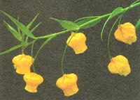
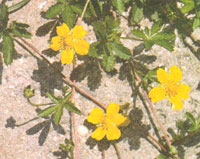

Seven herbal remedies that failed the scientific test of time.
Botanical name: Physalis alkekengi
Other names: Bladder Cherry, Winter Cherry, Strawberry Tomato, Ground Cherry
Family: Nightshade
Description: A perennial plant with upright branched stems growing to approximately two feet. Its leaves are oval and pointed, usually two to three inches long. Whitish flowers appear from June to August and then drop off as the calyxes (lanterns) appear. The lantern contains a red cherrylike fruit.
Indications: Despite the fact that many herbalists suggest the use of Chinese lantern as a diuretic, there are no scientific studies to date that validate such beliefs. While no solid evidence exists for the herb's medicinal use, the fruit can be made into jams and jellies.
CINQUEFOIL
Botanical name: Potentilla reptaans
Other names: Sunkfield, Five-Fingers, Five-Leaf
Family: Rose
Description: Cinquefoil is a'creeping perennial whose runners can grow to five feet. It has toothed leaves with hairy veins and produces bright yellow flowers from May to August.
Indications: Common lore aside, there is no pharmacological evidence to suggest that decoctions of the plant root are effective as an antipyretic (fever reducer). However, tannins present throughout the plant suggest its use as an astringent would be effective.
DANDELION
Botanical name: Taraxacum officinale
Other names: Lion's Tooth, Pissabed, Blow Ball, Priest's Crown, Telltime
Family: Composite
Description: The dandelion is a perennial herb with a slender hollow stalk that bears a single yellow flower. Its blooming season is March through September.
Indications: The use of dandelion potions to help with liver, gallbladder and other digestive ailments has no credible medical support. It is, however, an effective diuretic.
GREAT BURDOCK
Botanical name: Arctiurn lappa
Other names: Cockle Buttons, Bur
Family: Composite
Description: A biennial growing to eight feet with large, wavy heart-shaped leaves and clusters of tubular purple flowers that bloom July to September. The small hooked burs that cling to passing animals contain the fruits, enabling the plant to spread over a large area.
Indications: While this plant has been employed for the treatment of numerous ailments, including leprosy, dandruff, rheumatism and lung disease, research has shown only one use to be valid: While it should never be taken internally, its properties make it effective as an external antiseptic.
HEMP DOGBANE
Botanical name: Apocynum cannabinum
Other names: American Hemp, Indian Physic, Bitterroot, Rheumatism Weed
Family: Dogbane
Description: This perennial is native to the United States and Canada and has branching stems growing three to five feet tall with oval to lance-shaped leaves in opposite pairs. It produces small white flowers from June to September. All parts of the plant produce a bitter, milky sap.
Indications: In the southern Appalachian mountains, the roots of this plant were either boiled in water or steeped in whiskey to be used as a physic for headaches and constipation. There is no scientific research that validates this use. Its only proven medical effect, namely that of cardiac stimulation, can be quite dangerous and so it should never be taken without consent and advice of a doctor.
SORREL
Botanical name: Rumex acetosa
Other names: Garden Sorrel, Greensauce, Soursuds
Family: Buckwheat
Description: A perennial growing two to three feet tall, with an erect stem branching at the top into several stalks bearing clusters of small reddish-brown to green flowers that bloom from June to September. Leaves are smooth and bright green, shaped like arrowheads, each on its own stalk.
Indications: Sorrel preparations have long been used as appetite stimulants, laxatives and fever reducers. Studies have in fact confirmed its laxative effect, as well as its efficacy as an external antiseptic. But research has also shown sorrel to have an excess of oxalic acid, which is poisonous to humans, so this herb should be avoided.
VERVAIN
Botanical name: Verbena officinalis
Other names: Pigeon's Grass, Herb of the Cross
Family: Vervain
Description: Vervain is native to the Mediterranean, but is now widely naturalized in North America. It is a perennial herb with thin stiff stems and leaves in opposite pairs, the lower ones appearing oblong and coarsely toothed and the upper ones slender and lanceshaped. Small lilac flowers appear from June to October.
Indications: Like great burdock, many claims have been made for vervain, but nearly all have been debunked through research. Pharmacologists have found no evidence to support vervain's use as either an antispasmodic or contraceptive agent or as an effective treatment for fevers, skin infections or dysentery. Vervain's only proven uses are as a diuretic and a remedy for gout.
|
MICHAEL VIARD/PETER ARNOLD, INC. |
 KLAUS SPAYSAN/PETER ARNOLD, INC |
 |